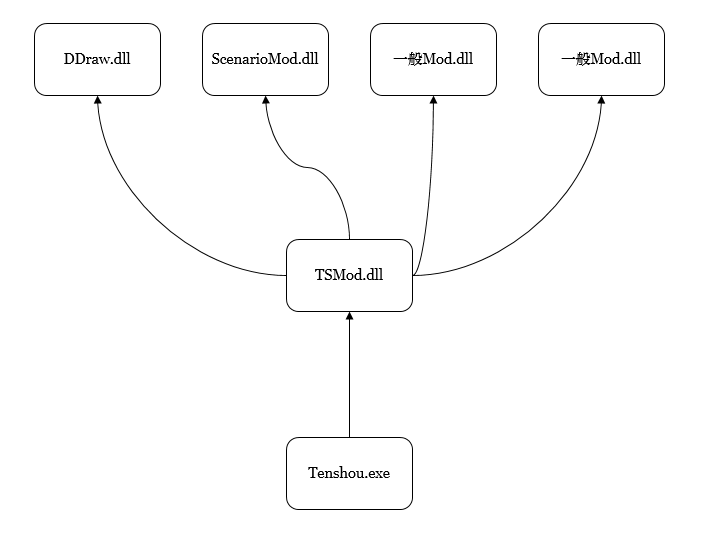

ここでは、主として当サイトで提供している「Modの大分類」について説明します。
Modには３種類の区分が存在します。
ベースとなるMODであり、これらが存在することで、他のMODが動作します。
一方、｢複数の基盤MOD｣が存在したとしても、どれか１つの基盤MODしか動作しません。
現在、基盤MODには、｢TSMod｣と｢PluginMod｣の２つあります。
両方存在する場合には、TSModが動作します。
後述の｢一般MOD｣では対応できないような、特殊な機能を多数もたせることになったMODです。
名前が決め打たれており、TSModその他と様々な通信を行います。
現在、特殊MODには、ScenarioModやCastleMapInRetsudenModなどが存在します。
なんらかの特定の機能を持つ一般的なMOD。
各人が１から作成することが可能です。
一般MODは比較的自由に名前を付けることが出来ます。
主な一般MODには、MapDataObgkMod、MemoryEditorMod、SemiFullScreenModなどが存在します。
又、ひな形として、SnCustomTitleModが存在します。
TSModを導入している場合の、一般Mod当の呼び出し関係図は下図のようになります。
(下の層が上の層を呼び出す)

PluginModのみ導入している場合の呼出し関係構図。
(下の層が上の層を呼び出す)